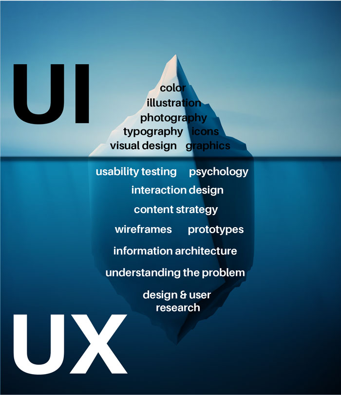
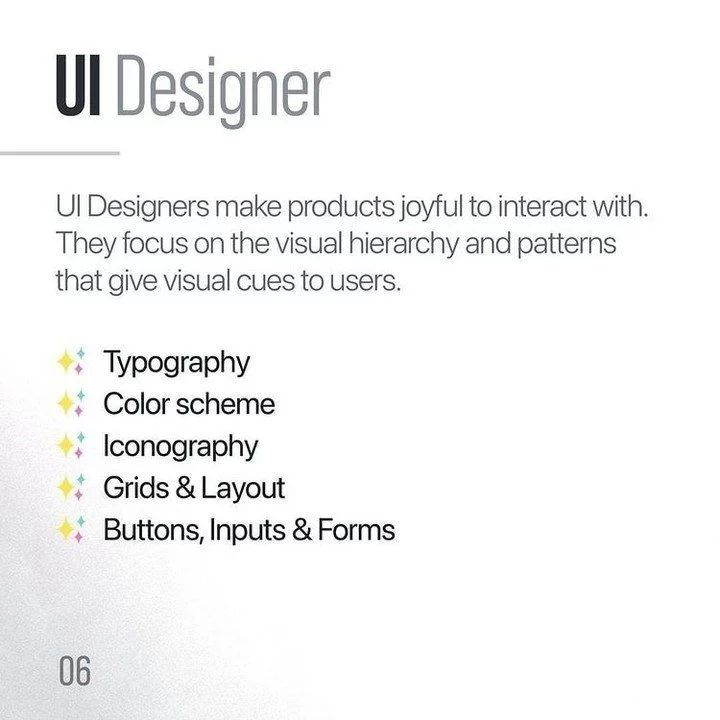
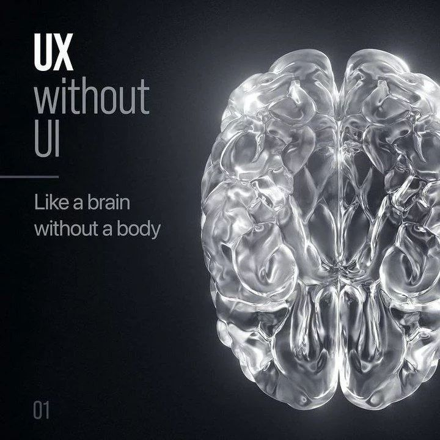

User Interface (UI) design primarily deals with the visual aspects of a digital product. It focuses on crafting the look and feel of the interface, including elements like buttons, icons, colors, typography, and layout.

Where User Experience (UX) design is concerned with the overall experience of the user when interacting with a product, UI Designers work inside the console utilizsing softwares like Figma, Sketch or XD
.





Where they meet: It's About The User

While UI design and UX design are closely related and often overlap, they represent distinct aspects of the design process. UI design is more about the presentation layer, while UX design is about the entire user experience.


UI Cornerstone Topics
- IconsAn icon is a symbol that represents a larger idea. It should concisely capture the idea that it represents.
- ColorsThe power of color knows no limits as long as users perceive colors equally. However, we should factor in that some people see the world through different lenses. As designers,…
- TypographyBefore typography and typefaces were invented people already were making attempts to create some printing techniques. The earliest versions are going all the way back to the…
- GridMany things around us, from architecture, nature or art works are settled in grids.
- Design SystemsComponents are the building blocks of an interface. They include buttons, checkboxes, labels, inputs, cards, and many others. Each of them has unique anatomy and implements a…